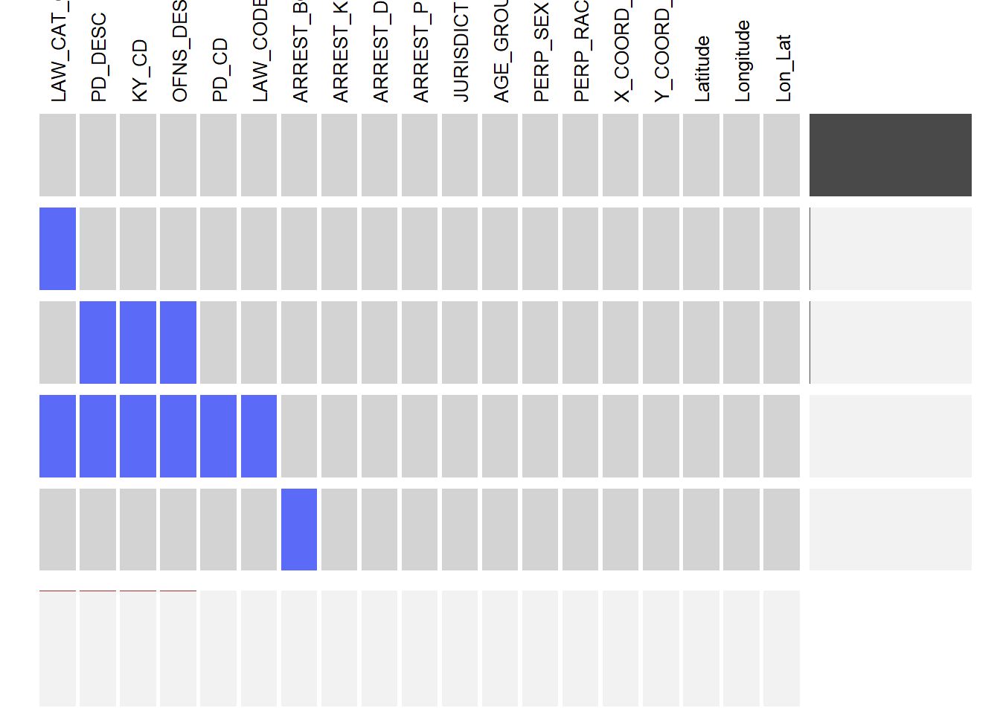
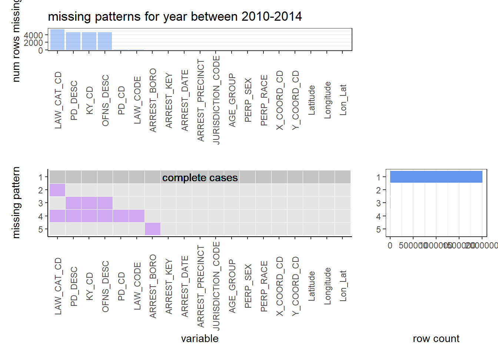
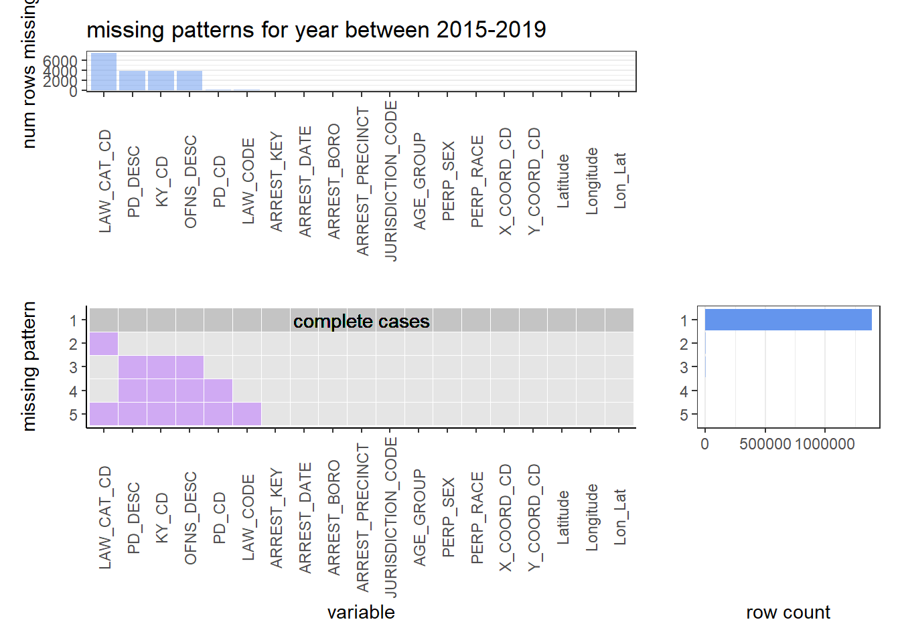
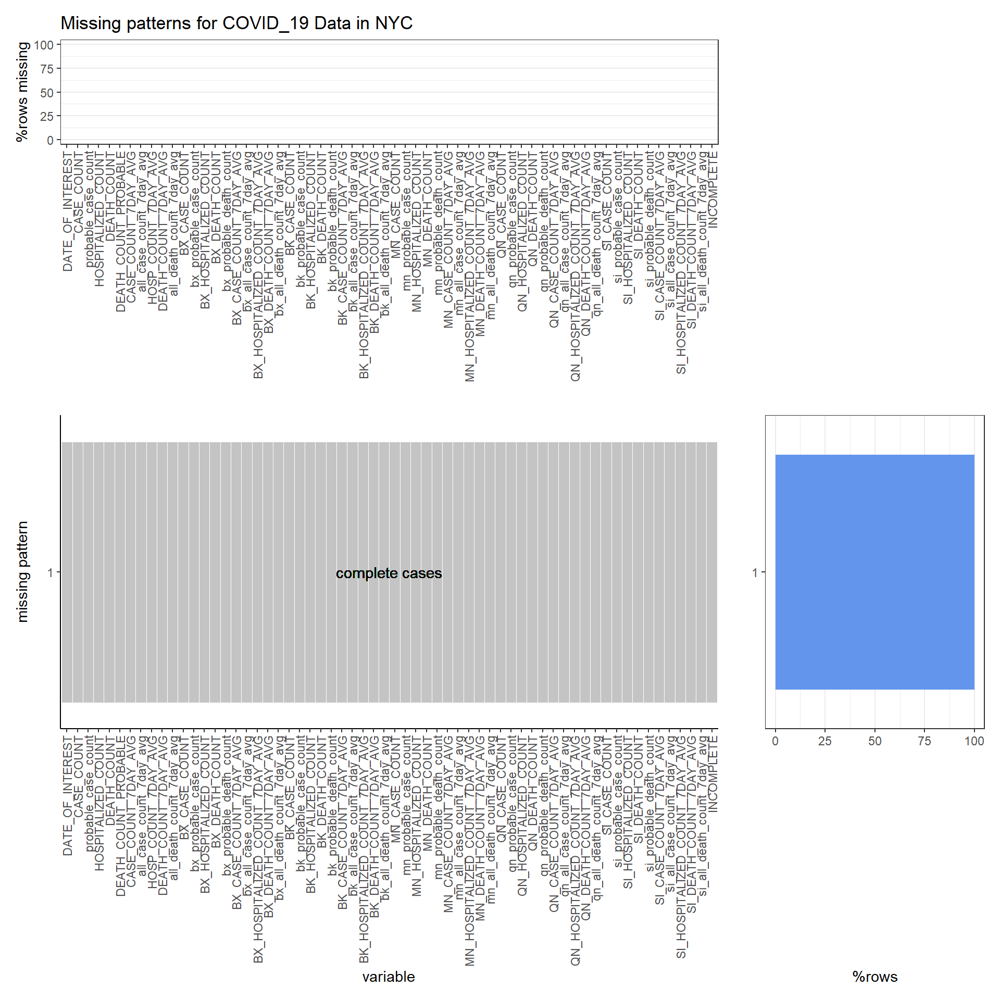

Chapter 4 Missing values
4.1 DATA-1 Arrest Historic Data
4.1.1 Missing patterns for year before 2010
4.1.2 Missing patterns for year between 2010-2014


4.1.3 Missing patterns for year between 2015-2019

4.1.4 Missing patterns for year after 2020

Insights:
Due to the large time interval of the data, we split the dataset by time and analyze missing value for different periods.
Compared to the total data size, the proportion of missing value for all column is small in total, so our dataset has good quality. We may just remove the rows which has missing value when we do the following analysis.
In all time periods, LAW_CAT_CD has the highest proportion of missing values. Besides, LAW_CAT_CD, PD_DESC, KY_CD, PD_CD, LAW_CODE and OFNS_DESC often miss together before 2020. After 2020, the pattern changed slightly, LAW_CODE column has no value any more. Maybe we will do further discussion about this.
Also we can find the missing pattern in data before 2010: Geographic location information(X_COORD_CD, Y_COORD_CD, Latitude and Longitude and Lon_Lat) tend to miss together.
4.2 DATA-2 COVID-19 Data

Insights:
- This is no missing value in this dataset so that we don’t need to preprocess it.
4.3 DATA-3 Mental Health Data


Insights:
Firstly, for this dataset, we only focus the mental health center’s basic condition in different areas to find the relation to crime, so we drop some unnecessary columns before we adopt missing value analysis. Secondly, the basic information(such as name/location) of mental health center is complete and have no missing values.
Secondly, the basic information(such as name/location) of mental health center is complete and have no missing values.
Thirdly, Missing values are mainly concentrated in these three columns: filter_inpatient_svc, filter_residential_pgm and filter_military (above 75%) and most of them are missing together. After reviewing the dataset, we find that missing represent that the flag = 0. So we will fill the missing value by zero and try to explore more information about the mental health center.